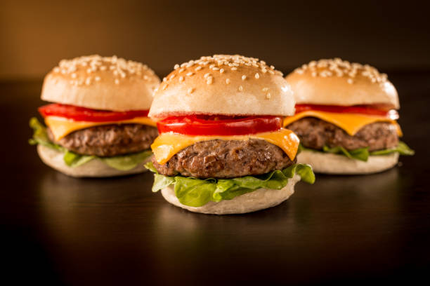

Homemade Burger Recipe

Burgers are a classic favorite, perfect for a quick weeknight dinner or a weekend barbecue.
Making a homemade burger allows you to control the quality of ingredients and customize it to your taste.
This simple yet detailed recipe will guide you through the steps to create a juicy, flavorful burger that rivals any restaurant version.
With fresh ingredients and a few essential tips, you'll be serving up perfect homemade burgers in no time.
Let's dive into the process of making this beloved comfort food right in your kitchen!
We will begin with listing the ingridients that we will require to make this tasty food.
Ingridients and Instructions
For the Burger patties
Ingridients
- 2 kg ground beef (80% lean for juicier burgers)
- 1 teaspoon salt
- 1 teaspoon garlic powder
- 1/2 teaspoon black pepper
- 1 teaspoon onion powder
- 1 tablespoon Worcestershire sauce (optional for added flavor)
Instructions
- In a large bowl, combine the ground beef, salt, black pepper, garlic powder, onion powder, and Worcestershire sauce.
Mix gently until just combined.Avoid overmixing to keep the patties tender.
- Divide the mixture into four equal portions and shape each portion into a patty about 3/4 inch thick.
Make a slight indentation in the center of each patty to prevent them from puffing up during cooking.
For the Burger assembly
Ingridients
- 4 hamburger buns
- 4 slices of cheese (cheddar, American, or your favorite cheese)
- Lettuce leaves
- Tomato Slices
- Onion slices
- Pickles
- Ketchup, mustard, mayonnaise, or your favorite condiments
Instructions
- Preheat your grill or a large skillet over medium-high heat.
Lightly oil the grill grates or the skillet to prevent sticking.
- Place the burger patties on the grill or skillet.
Cook for 3-4 minutes on the first side without pressing down on them.
- Flip the patties and cook for another 3-4 minutes for medium doneness.
Add a slice of cheese on top of each patty during the last minute of cooking and cover with a lid to melt the cheese.
- While the patties are cooking, toast the hamburger buns on the grill or in a toaster until they are lightly golden.
Assembling the Burger
- Spread your favorite condiments on the bottom half of each bun.
- Place a lettuce leaf on top of the condiments.
- Add a cooked burger patty with melted cheese on top of the lettuce.
- Top the patty with tomato slices, onion slices, and pickles.
- Spread more condiments on the top half of the bun, if desired.
- Place the top half of the bun on the assembled burger.
Now that the burger is set and ready its time to serve and enjoy the meal
To Serve
- Serve the burgers immediately while they are hot and juicy.
- Pair with your favorite sides, such as French fries, onion rings, or a simple salad.
Enjoy your perfect homemade burgers! This recipe ensures that each bite is filled with delicious flavors and satisfying textures.
Customize your toppings and condiments to make it your own and delight in the simplicity and comfort of a classic homemade burger.